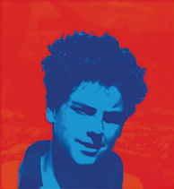
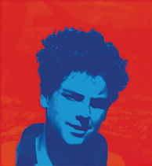

¿Qué significa que alguien sea beatificado?
Ser beatificado significa que la Iglesia reconoce que alguien vivió con gran santidad y puede ser ejemplo para todos.
¿Por qué Carlo Acutis fue beatificado?
Porque la Iglesia reconoció su vida ejemplar: amaba la Eucaristía, usó la tecnología para evangelizar y vivió con una gran fe y bondad.